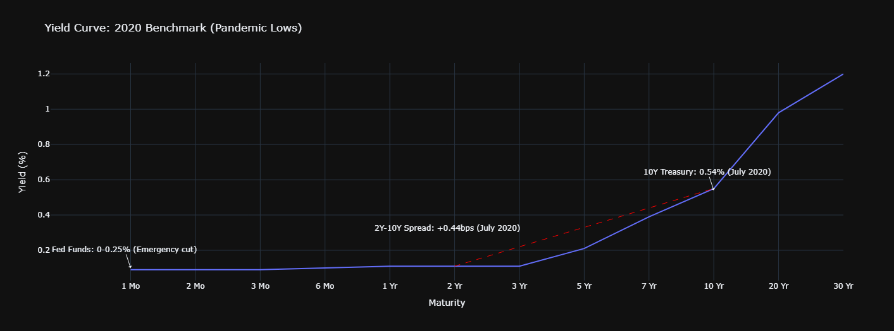
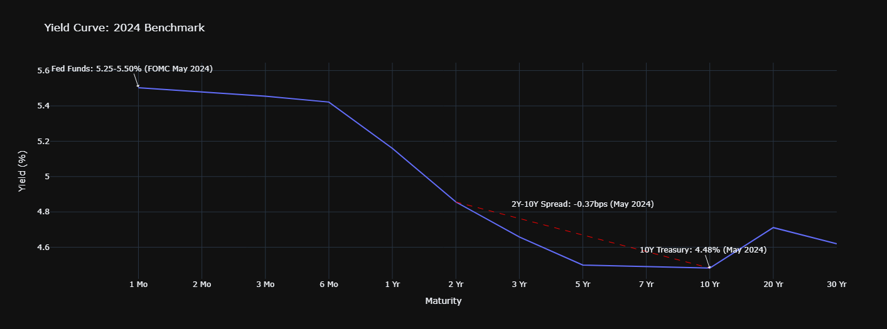

Requires Google account. Runs in cloud with no setup.
Project Overview
This analysis provides an interactive exploration of the U.S. Treasury yield curve, examining the relationship between maturities and macroeconomic indicators. The tool enables:
- Dynamic visualization of yield curve movements over time
- Fully interactive 3D surface plot
Yield Curve Evolution: 2020 vs. 2024
2020 Crisis Period
- 10Y Treasury: 0.54% (July 2020 low)
- 2Y-10Y Spread: +49bps
- Fed Funds: 0-0.25%
Emergency easing flattened curves during market stress
2024 Inflation Fight
- 10Y Treasury: 4.34% (May 2024)
- 2Y-10Y Spread: -34bps inverted
- Fed Funds: 5.25-5.50%
Aggressive hiking cycle reshaped yield relationships


2020 curve shows pandemic-era compression vs. 2024's inflation-driven inversion
Technical Implementation
The system was developed using Python's quantitative finance stack:
- Data Pipeline: Automated collection of Treasury data from FRED API
- Analysis: NumPy for curve interpolation and PCA decomposition
- Visualization: Plotly for interactive 3D surface plots
- Notebook: Jupyter with widget controls for parameter exploration